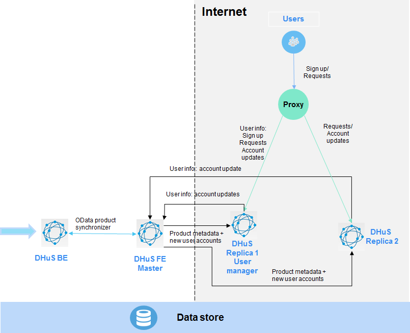

The DHuS is a web application, running within a Java Virtual Machine. All its middleware components, such as database and application servers, run inside the JVM container. In order to allow integration into a hosting environment, the application needs to be installed and configured having well in mind what are the external interfaces to be used. The application needs to manage two flows:
• the incoming flow: during the products ingestion process, the DHuS Software picks up products (compressed or not) from a folder and move them into another folder. We will call those folders, respectively, inbox and incoming.
• the outgoing flow (how external users can search and download published data): this can happen using http (Tomcat) and, in particular cases, also ftp (service started by DHuS) on some dedicated service ports.
The filesystems used by the application, can be two or more;
• one filesystem is needed for storing the DB where the products are indexed, along with the logs and application binaries. This filesystem needs to reside on the local disks.
• one or more filesystems are used for archiving the products. Given the volume of normal Sentinels production, it is also recommended to use an external disk for mounting the second filesystem, in order to cope with several TBs of products.
The technical specifications of the DHuS are provided the following table:
| MINIMUM | MEDIUM | HIGH | |
|---|---|---|---|
| CPU Core Number | 4-16 | 24 | 32 |
| RAM | 4-16 GB | 32 GB | 48 GB |
| LOCAL DISK | 1 TB | 1 TB | 1 TB |
| ARCHIVE* | 50 TB(1 Month Rolling Archive) | 200 TB (till 3 month Rolling Archive) | 500 TB |
| AVAILABLE EXTERNAL BANDWITH | 100 Mbps | 2 Gbps (till 3 month Rolling Archive) | 10 Gbps |
| INTERNAL BANDWITH | 1 Mbps | 4 Gbps (till 3 month Rolling Archive) | 10 Gbps |
* Size of the archive is provided for a typical Copernicus production rate
The Linux based operating Systems in which the DHuS operability has been tested are:
• Debian 7.7
• Red Hat 6.7
DHuS is accessed primarily via HTTP and FTP interface. The Installation procedure of the DHuS Software must be performed using a non-privileged user (not root); application installed in this way cannot start services listening on ports numbers smaller than 1024. By default the HTTP interface is reachable on 8081 port that must be opened for inbound requests. The DHuS FTP service is reachable, by default, on 2121.The DHuS provides also a mailing service based on an external SMTP server. Following table describes the default DHuS network ports configuration:
| SERVICES | INBOUND | OUTBOUND |
|---|---|---|
| HTTP | 8081 | - |
| HTTPS | 443 | - |
| FTP | 2121 | - |
| SMTP | - | 25 |
DHuS software is fully written in java and can be considered portable to any hardware platforms supported by JRE (Java Runtime Environment). The DHuS supports:
• All the Java JDK versions before the 8th
• The Oracle distribution version 1.7.0_79.
It is recommended to use a Linux Operating System working on a multithread environment running in 64bit.
The DHuS server requires Java Runtime Environment version 1.6+ being installed on the system.
An SMTP mail server should be made available to the DHuS System in order to allow its mailing functionalities.
The proxy configuration is required in case the HTTPS protocol shall be used. In this case, make sure the apache version compatible with DHuS is the number 2.2.15 with modproxy and modssl. The httpd v command tells which config file Apache is using.
Step 1: Create a user named dhus. Every step in the installation procedure, if not explicitly mentioned, shall be performed as dhus user.
Step 2: Create the installation directory: mkdir -p [install-dir]
Step 3: Download the DHuS package (shar package) and save it into the installation directory
Step 4: Change the permissions on the file: chmod +x dhus-XX.XX.XX.shar
Step 5:Launch ./dhus-XX.XX.XX.shar (the package will autoinstall).Once executed, the system setting configuration file can be accessed and updated.
Step 6:Edit the etc/dhus.xml configuration file and modify the varFolder variable to an absolute path of your choice. This directory will contain the local archive, the incoming products, the database, etc. Eg: <!ENTITY varFolder “ /home/dhus/local_dhus”>
Step 7: Start the DHuS entering the following command in the installation directory:
nohup /bin/bash ./start.sh &
The log files will be created in the etc directory after the installation.
DHuS configuration files are:
• Start.sh; located in the installation directory
• dhus.xml; located in the etc directory
• server.xml; located in the etc directory
• log4j2.xml;located in the etc directory
the etc directory will be created after the launch of the .shar installation package:
The DHuS is equipped with AJS GUI. This section deals with the configurability of the AJS GUI which allows a wide set of configuration actions which do not need a restart of DHuS to be applied. Due to the growth of the different centres and related installations, a new configuration management module has been added into the AJS web app. It allows configuring various aspects of the GUI; mainly it is related to style, texts and layout:
• Title(shown in the header bar)
• Sections visibility (Cart, Profile, Sign In)
• URL and texts of the link logos(shown in the header panel)
• Version text(shown in the info panel)
• Data Hub Logo(shown in the info panel)
• Mission Tag(shown in the Product List panel)
• Mission footprint style and color(shown in the Map panel)
• Advanced Search Mission specific fields (shown in Advanced Search Panel)
• Map Layer (shown in the Map View)
Please note that all the settings are included in the client side (2 text files), thus it is possible to change a parameter without restarting the DHuS, but just doing a refresh via browser.
The files in charge of the GUI configuration management are located in:
[DHUSDIR?]/var/tomcat/webapps/new/conf
appconfig.json
and in [DHUSDIR?]/var/tomcat/webapps/ROOT/config
styles.json
A special attention goes to the configuration of the advanced search mission specific fields. The configuration file appconfig.json has been updated in order to manage mission specific filters
A "missions" section has been added, containing an array with the following structure: "name": , "indexname": , "indexvalue":, "filters":[filter_array] where [filter_array] is an array of mission-specific filters with the following structure: "indexname": "indexlabel": "regex": [OPTIONAL] "indexvalues": (if present it appears a combobox containing the list of all specified values, otherwise nothing appears. present Here below an example of filters configuration specific for S1 and S2 missions.
"missions": [ { "name": "Mission: Sentinel-1", "indexname": "platformname", "indexvalue": "Sentinel-1", "filters": [ { "indexname": "producttype", "indexlabel": "Product Type (SLC,GRD,OCN)", "indexvalues": "SLC|GRD|OCN", "regex": ".*" }, { "indexname": "polarisationmode", "indexlabel": "Polarisation (e.g.HH,VV,HV,VH,...)", "indexvalues": "HH|VV|HV|VH|HH+HV|VV+VH", "regex": ".*" }, { "indexname": "sensoroperationalmode", "indexlabel": "Sensor Mode (SM,IW,EW,WV)", "indexvalues": "SM|IW|EW|WV", "regex": ".*" }, { "indexname": "relativeorbitnumber", "indexlabel": "Relative Orbit Number (from 1 to 175)", "regex": "[1-9]|[1-9][0-9]|[1-9][0-7][0-5]" } ] }, { "name": "Mission: Sentinel-2", "indexname": "platformname", "indexvalue": "Sentinel-2", "filters": [ { "indexname": "cloudcoverpercentage", "indexlabel": "Cloud Cover % (e.g.[0 TO 9.4])" } ] } ]
Once you have changed a value in the file, you only need to refresh your browser to see the change immediately applied. No need to restart the DHuS
In the following we describe the steps needed for migrating from a previous DHuS version (oldversion) to the new DHuS version 0.12.5-6-osf (newversion). First of all, backup the items you need to inherit:
1. Database folder (path attribute of tag in dhus.xml)
2. Solr folder (path attribute of tag in dhus.xml)
3. Products archive folder (path attribute of tag in dhus.xml)
After you have installed the newversion following the procedure the easiest way is to have the newversion configured (in dhus.xml) to use the pre-existing DHuS archive, database and solr directories. Therefore, in dhus.xml of newversion set the database, solr, and archive folders to the same value they have in your oldversion installation Alternatively, you may use the backed up copies in directory of your choice (as usual configured within dhus.xml).
In addition, set in dhus.xml cryptType and cryptKey, specifying your database encryption key, or leave empty if your database is not encrypted.
The objective of the configuration in scalability mode is to have several DHuS instances acting as one to share the user load and the products information: the deployment in scalable mode is completely transparent to the user.
The deployment of DHuS in scalable mode suitable for the operational scenario foresees three main actors:
• one DHuS acting as master
• one or more DHuS acting as replicas
•one proxy
The DHuS master is the one and only product data source, meaning, it is in charge of the ingestion/synchronization of products.
The DHuS replicas are master’s doppelgangers. The product and user information stored in the DHuS master are broadcasted to all the replicas so that users can access product metadata. Replicas are accessed by the users (through the proxy). Consequently, the user information (e.g. profile changes) is spread from the replicas to the master. It is mandatory that master and replicas share the data store to allow access to ingested products. The product deletion and eviction shall be executed on the replicas. User registration shall be executed only on one of the replicas (to avoid database conflicts).
A proxy is needed for load balancing among the replicas. It must be configured to redirect incoming traffic to the DHuS replicas based on a load balancing algorithm with sticky sessions. Please refer to the proxy documentation for instructions on how to implement this.
Step 1: Download the installation package and install on all machines following
Step 2: Master Configuration
Step 3:Replica Configuration
Configure the start.sh of the replicas as follows:
-Dhttp.proxyHost=[external proxy IP] \
-Dhttp.proxyPort=[proxy port] \
-Dhttp.nonProxyHosts="[proxy internal IP without last block].*"\ (e.g., 192.168.1.*)
-Ddhus.scalability.active=true\
-Ddhus.scalability.local.protocol=http \
-Ddhus.scalability.local.ip=[DHuS replica internal IP] \
-Ddhus.scalability.local.port=[DHuS replica port] \
-Ddhus.scalability.local.path=/\
Step 1: Follow Step 1 in previous procedure
Step 2: Follow Step 2 in previous procedure, configuring the scalability option as follows.
-Ddhus.scalability.active=false \
Step 3: On the master, copy the database and Solr index (in {varfolder}/database and {varfolder}/solr, respectively), overriding the existing directories
Step 4: Remove this file : {varfolder}/solr/dhus/conf/managed-schema, if present.
Step 5: Start the DHuS Master to perform a database migration(automatically performed).
Step 6: At the end of the migration process (which can take a while, depending on the number of products and users in the database), stop the DHuS Master.
Step 7: Backup the database and Solr index and copy them on each replica overriding the existing directories in {varfolder}.
Step 8: Add the option to the start.sh of the master: -Dauto.reload=false to prevent the master from sending its database to the replicas.
Step 9: Start DHuS master and wait until the startup process is complete.
Follow Steps 3, 4 and 5 of previous procedure; taking care of starting replicas one at a time.
Please note that at each new replica addition to the cluster it is necessary to shutdown the master, restart it and start the replicas from the newest to the oldest.